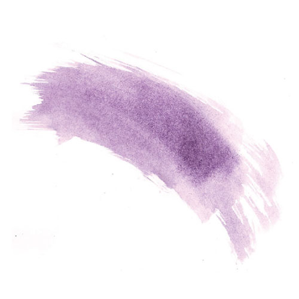
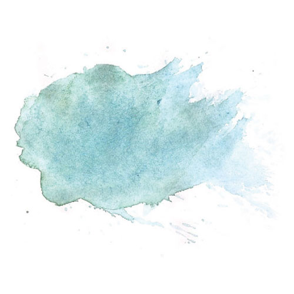
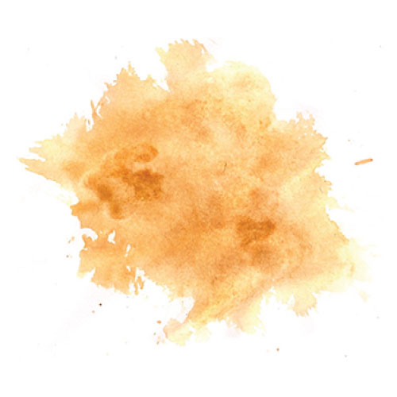
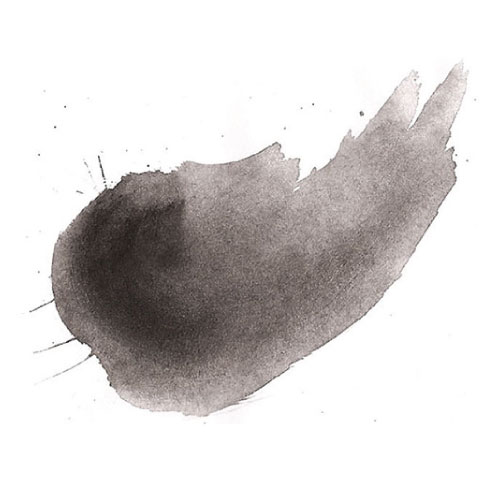
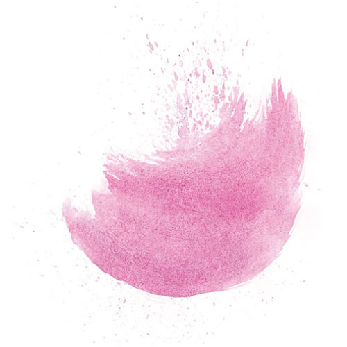
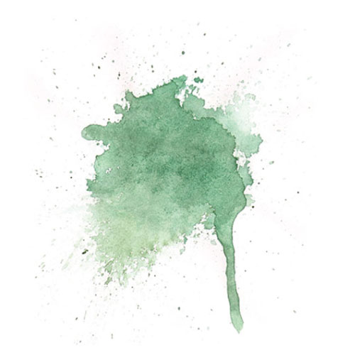
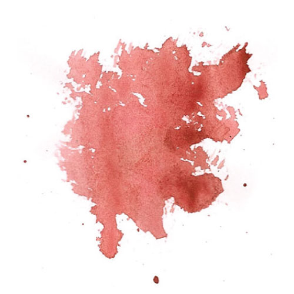
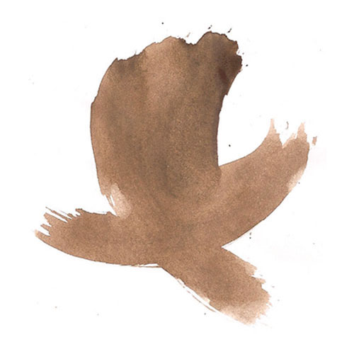
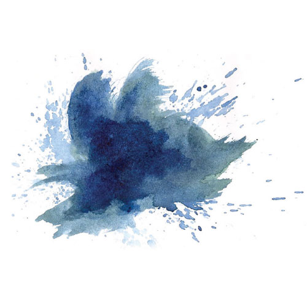
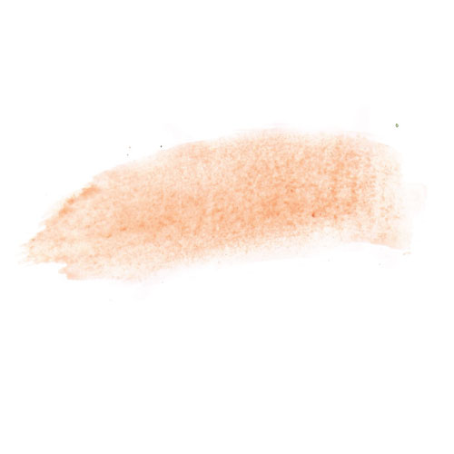

A natural dye derived from the secretions of predatory sea snails, tyrian purple is thought to date as far back as the age of the Phoenicians in the 16th Century BC. Approximately 12,000 snails are needed to produce the amount of dye for one garment, and as such, the expensive color was historically worn as a symbol of status and wealth.
the
Origins of Color
Tyrian Purple

Verdigris
Originating as far back as Greek and Roman antiquity, this pigment was derived from the green crust that formed on copper plates that would be boiled in sealed pots of vinegar. Verdigris was one of the most vibrant shades of green available until the 1800's, but is now much less popular because of its inherent toxicity.

Ochre

Found in prehistoric cave paintings in different continents around the world from up to 75,000 years ago, ochre is one of the oldest pigments used by humans. It is derived from hydrated iron oxide in clay and can range from a deep golden yellow to a reddish brown.
Kohl
A deriviative of lead sulfite, kohl was originally used by Ancient Egyptians as an eyeliner not for fashion but rather practicality. It was thought to prevent eye infections and sun damage to the eyes because of its toxic, antibacterial qualities. The metallic pigment was also used historically for cosmetic purposes in the Middle East and India to ward off 'the evil eye.'

Magenta

One of the earliest synthetic pigments, magenta was originally patented as 'fuchsine' by a French chemist in 1859, who created the dye by combining aniline and carbon tetrachloride. The color's name was changed the same year, in celebration of a battle victory of the French and Sardinians under Napolean in the Italian city of Magenta.
Emerald Green
Widely poplular throughout the 19th century because of simple manufacturing processes, emerald green pigments were used commonly used in artist paints as well as household paints. However, the toxic combination of the pigment's arsenic and mold living in damp rooms made exposure to emerald green paint very dangerous.

Cinnibar Red

Derived from mercury ore, cinnibar red requires an extensive production process, and as such it is one of the most expensive pigments on the market. Ancient Romans originally sourced mercury from the Almaden Mines in Spain, and today the cinnibar mineral can be found in areas with recent volcanic activity and alkaline hot springs.
Van Dyke Brown
Found in paintings dating back to the 1600's and named after a Flemish painter, this pigment is derived from over 90% organic matter, including soil and peat. Van Dyke Brown is also the name of an early sepia-toned photographic printing process.

Prussian Blue

Another early synthetic pigment, prussian blue was introduced in Germany in the early 1800's as an alternative to the more obscure, plant-based indigo. It is the blue pigment used in traditional blueprints,, and it has been found in famous paintings such as Van Gogh's Starry Night. Beyond visual uses, the prussian blue pigment is also used in medicine as an antidote to heavy metal poisining.
Deep Champagne
Named after the alcoholic beverage that ranges in hue from pale pink to bright yellow, champagne was first recognized as a color in the early 1900's. Deep champagne emerged as a saturated version of champagne toward the middle of the century, and was included in the Dictionary of Color Names in 1955.
